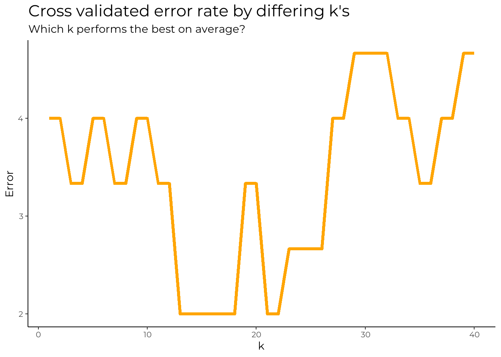
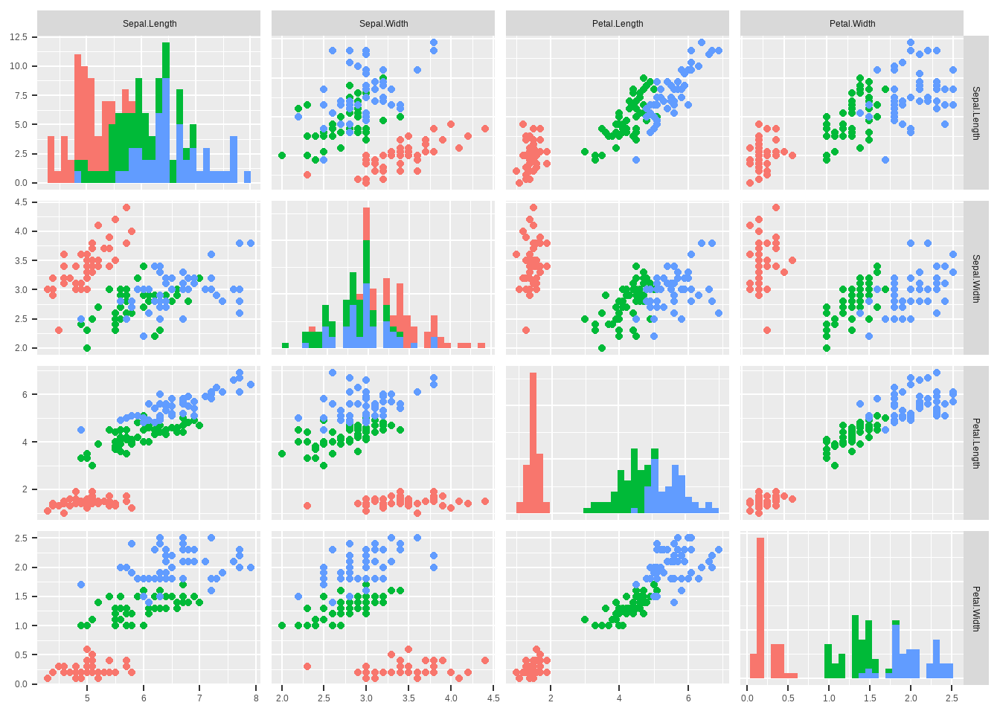
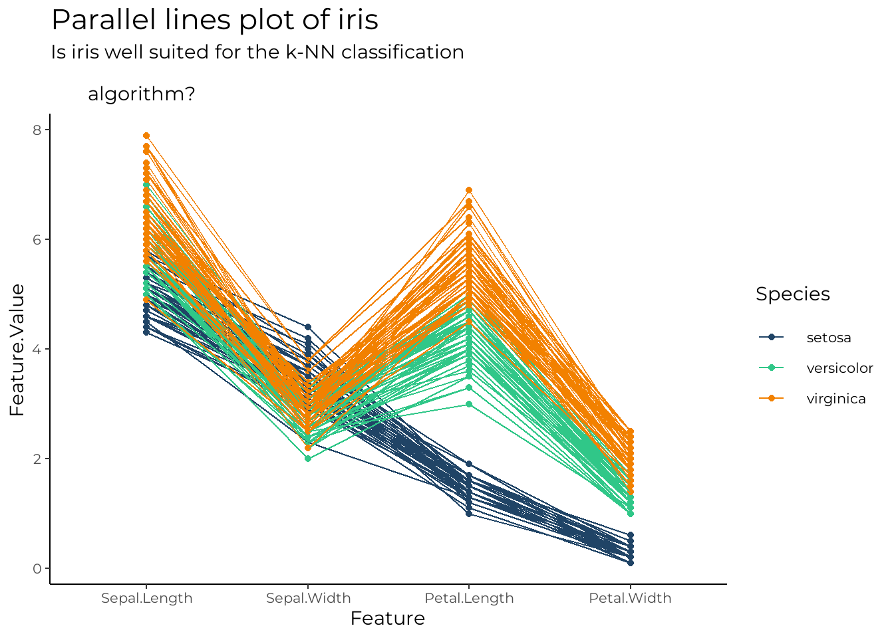
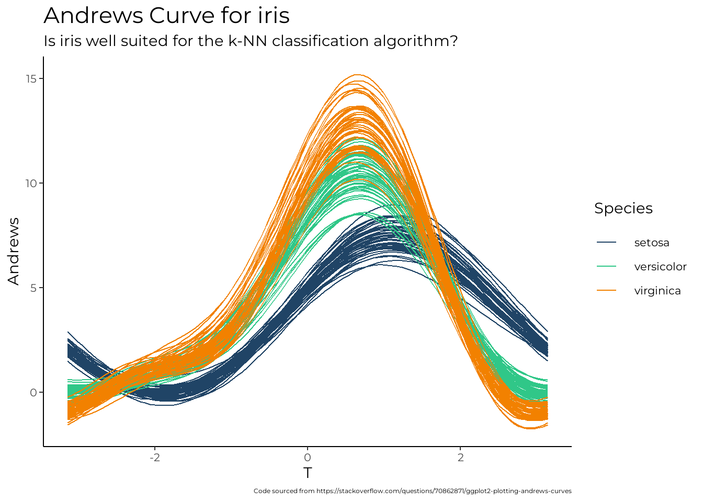
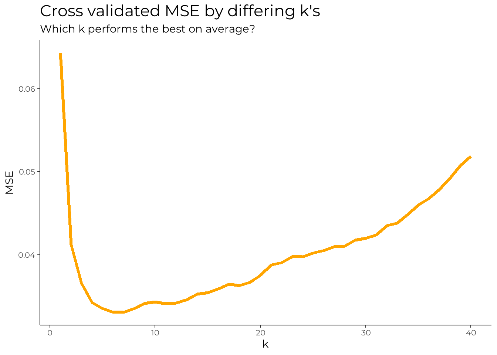
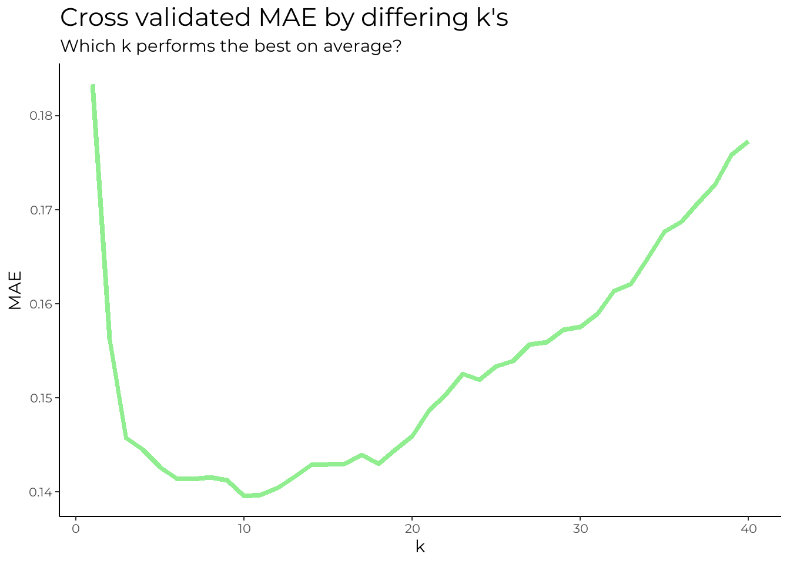
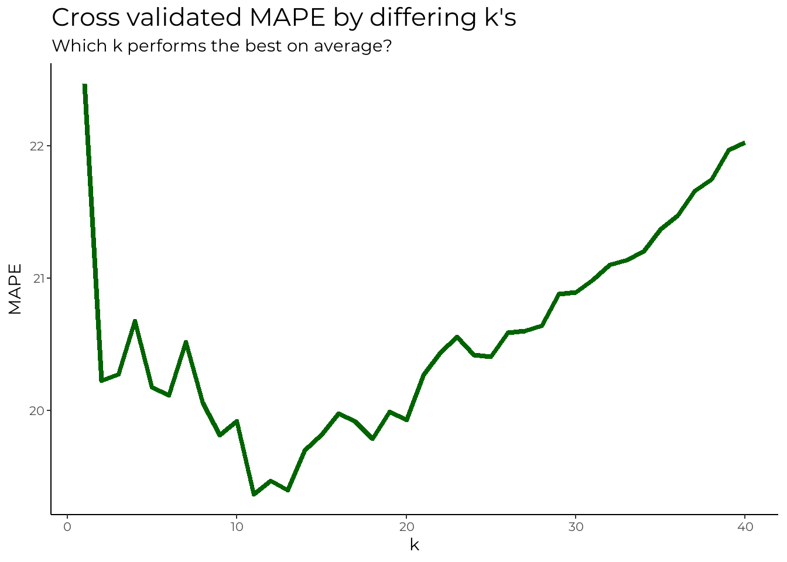

Introduction
The k-nearest neighbors algorithm (k-NN) is a non-parametric supervised learning method. Non-parametric meaning the algorithm does not make any distributional assumptions about the data, and supervised meaning data with labels is used.
“The k-nearest neighbors algorithm (k-NN) was first developed by Evelyn Fix and Joseph Hodges in 1951, and later expanded by Thomas Cover. It is used for classification and regression. In both cases, the input consists of the k closest training examples in a data set. In k-NN classification, the output is a class membership. An object is classified by a plurality vote of its neighbors, with the object being assigned to the class most common among its k nearest neighbors (k is a positive integer, typically small). If k = 1, then the object is simply assigned to the class of that single nearest neighbor.In k-NN regression, the output is the property value for the object. This value is the average of the values of k nearest neighbors - Wikipedia”
In simple terms, the algorithm is passed a data set with labels, and a new point which is not in the provided data. The algorithm uses the proximity of other points from the data set near the new data point to make predictions about the individual point. This prediction can either be a classification, or a numeric value. Pictures always help, so lets take a look at one!
Visual example
In the below image we have two features, namely \(X_{1}\) and \(X_{2}\). We also have two classes, A and B, which are respectively denoted by yellow and purple points. Our new point which is to be classified or regressed on is red. You might already be guessing how some of the terms such as ‘proximity’ and ‘plurality vote’ factor into this algorithm from the image, but I will spell it out for you JIC. So to assign the red point a class we look at its \(k\) nearest neighbors. The word neighbor implies nearness. So we look at the points that are closest to the red point. For \(k=1\), this is the single closes point, for \(k=2\) this is the two closest points, for \(k=3\) this is the three closest points and so on. Now, consider the \(k=3\) case show in the image. Of the three closest points to the red point, two are purple and one is yellow. If a ‘plurality vote’ was two occur, one yellow point would vote that the red point should be assigned to class A, whereas two purple points would vote that it should be class B. Clearly, the purple points win, so the red point would be assigned to class B. But this will not always be the case. With \(k=6\) it is direct that yellow points outnumber the purple, and hence the ‘vote’ is won by the yellow points; the red point will be assigned to class A.
An interesting case
There is always the chance that there will be an equal amount of the ‘highest vote number’ for some \(k\). This means when the vote occurred, there was an equal amount of points belonging to two or more different classes (tied values). There are multiple ways to eliminate this tie.
Choose a different \(k\): A tie will likely not exist for all potential values of \(k\). So we can change our \(k\). Simple enough. But arbitrarily choosing any other \(k\) does not ensure that there will be no ties
Randomly choose between the tied values: Just as the name suggests
Allow in until natural stop: This one is a little more nuanced than the others. Choose the smallest number \(k\) where \(k \geq 2\) such that there exists no ties
Distance metrics
Since it has been established that the k-NN algorithm uses the notion of proximity, it is important to also quantify how we can measure such
Euclidean distance
Euclidean distance is a perhaps the most common and well known measure of distance in mathematics. As I recall from my golden high school days, it is used just about everywhere; complex numbers, vectors, trigonometry, calculus and so on.
“In mathematics, the Euclidean distance between two points in Euclidean space is the length of a line segment between the two points. It can be calculated from the Cartesian coordinates of the points using the Pythagorean theorem, therefore occasionally being called the Pythagorean distance.”

In two-dimensions the Euclidean distance is simple enough. It follows directly from Pythagoras theorem, and is nothing more than the sum of the squared differences of the \(x\) and \(y\) coordinates. Suppose we have two points in the Cartesian space \(p = (p_{1}, p_{2})\) and \(q = (q_{1}, q_{2})\). Then the Euclidean distance is
\[\begin{align*} d(p,q) = \sqrt{(q_{1}-p_{1})^2 +(q_{2}-p_{2})^2} \end{align*}\]
Some fancy geometric proofs, and pattern observing lands us the \(n\) dimensional Euclidean distance, which is not too different from the two dimensional one. Suppose we have two points in a \(n\) dimensional space, \(p = (p_{1}, p_{2}, ... , p_{n})\) and \(q = (q_{1}, q_{2}, ... , q_{n})\) . Then the Euclidean distance is \[\begin{align*} d(p,q) = \sqrt{(q_{1}-p_{1})^2 + (q_{2}-p_{2})^2 + (q_{3}-p_{3})^2 + ... + (q_{n}-p_{n})^2} \end{align*}\]
This is the metric I will use to establish ‘proximity’ later due to its simplicity, and appropriateness for the latter notion. But it is important to note that the Euclidean distance does not perform as well in very high dimensions numbers. Enter, the curse of dimensionality!.
“The curse of dimensionality refers to various phenomena that arise when analyzing and organizing data in high-dimensional spaces that do not occur in low-dimensional settings such as the three-dimensional physical space of everyday experience. The curse of dimensionality in the k-NN context basically means that Euclidean distance is unhelpful in high dimensions because all vectors are almost equidistant to the search query vector”
Just to spice things up, I will throw another distance metric into the bag, but lets first encode the euclidean distance metric
get_euclid <- function(p, q){
#Check for same length
if(length(p) != length(q)) return("Error, unequal length!")
#Calculate distance
distance = sqrt(sum((q-p)^2))
return(distance)
}Cosine distance
Cosine similarity/distance measures the similarity between two vectors of an inner product space. Mathematically, it measures the cosine of the angle between two vectors projected in a multi-dimensional space. Using this distance we get values between 0 and 1, where 0 means the vectors are 100% similar to each other and 1 means they are not similar at all
Cosine distance has the below formula
\[\begin{align*} \cos{\theta} = \frac{\overrightarrow{a}\cdot\overrightarrow{b}}{||\overrightarrow{a}|| \times ||\overrightarrow{b}||} \end{align*}\]
Those of you familiar with vectors and linear algebra will note that cosine similarity is just a re-arrangement of the dot product formula. The closer the cosine value is to 1, the smaller the angle between the two vectors, and the greater the match between the two vectors. And vice versa. Earlier I mentioned that euclidean distance breaks down in higher dimensions. Since cosine distance looks how closely two points are oriented to each other, it deals with data with a large number of dimensions better (i.e. when the data is sparse)
get_cosine <- function(p, q){
#Check for same length
if(length(p) != length(q)) return("Error, unequal length!")
#Calculate cosine distance
cos_dot = sum(p*q)
p_mag = sqrt(sum(p^2))
q_mag = sqrt(sum(q^2))
cos_dis = 1 - cos_dot/(p_mag*q_mag)
return(round(cos_dis, digits = 10))
}Data format
There are two different data formats which we consider. In the case of classification, the input data should take the format
\[\begin{bmatrix} X_{1} & X_{2} & X_{3} & X_{4} & \dots & X_{n} & Y \end{bmatrix}\]where \(X_{1}, ... , X_{n}\) are the \(n\) feature vectors. \(Y\) is the vector of the labels. Regression carries the exact same format except \(Y\) should now be a continuous variable we want to predict.
The majority vote helper
The majority vote helper conducts the ‘plurality vote’ that was described earlier; it takes the \(k\) nearest labels and returns the dominataing label. Note that labels is a vector of the \(k\)-nearest neighbors labels from closest to farthest. The helper will also have a tie-breaking mechanism that was described earlier built into it. When a tie occurs, the function iteratively removes the furthest label from the labels vector until the tie no longer exists. This helper is only useful in the case of classification.
get_majority_vote <- function(labels){
#Vote frequencies and max
votefreq = as.data.frame(table(labels))
votemax = max(votefreq[, 2])
voteties = sum(votefreq[, 2] == votemax)
#First case for no ties, second for ties
if(voteties == 1){
return(votefreq[votefreq[, 2] == votemax, ][1,1])
} else {
#Reduce label length
i = length(labels)
while(voteties != 1){
i = i - 1
labels = labels[1:i]
votefreq = as.data.frame(table(labels))
votemax = max(votefreq[, 2])
voteties = sum(votefreq[, 2] == votemax)
}
return(votefreq[votefreq[, 2] == votemax, ][1,1])
}
}Main algorithms
Classification
The kNN algorithm for classification calculates the distance between the new point and all the other points in the data set. It sorts the distances from the shortest to furthest and then chooses the \(k\) smallest distances. The get_majority_vote() helper is called on the labels of theses \(k\) smallest distances to produce the dominant label which is then returned by the function. As it turns out the regression problem is even easier than that of classification. A majority vote helper is not even required. We simply find the \(k\) nearest neighbors, and average the value of the target variable to find the value for the new point.
knn_classify <- function(df, k, new_point, type){
#Check the new point is of same length
if(length(new_point) != ncol(df) - 1) return("Error, unequal length!")
#Calculate the distances and order them
df_euclid = df[, (ncol(df) - 1):ncol(df)]
df_points = as.data.frame(df[, 1:(ncol(df)-1)])
for(i in 1:nrow(df_euclid)){
df_euclid[i, 1] = get_euclid(p = new_point,
q = as.numeric(df_points[i, ]))
}
df_order = df_euclid[order(df_euclid[,1]), ]
#Return the k-closest neighbors
df_knn = df_order[1:k, ]
labels_k = df_knn[, 2]
#The dominating label
dom_label = get_majority_vote(labels = labels_k)
return(dom_label)
}Regression
As it turns out the regression problem is even easier than that of classification. A majority vote helper is not even required. We simply find the \(k\) nearest neighbors, and average the value of the target variable to find the value for the new point.
knn_regress <- function(df, k, new_point){
#Check the new point is of same length
if(length(new_point) != ncol(df) - 1) return("Error, unequal length!")
#Calculate the distances and order them
df_euclid = df[, (ncol(df) - 1):ncol(df)]
df_points = as.data.frame(df[, 1:(ncol(df)-1)])
for(i in 1:nrow(df_euclid)){
df_euclid[i, 1] = get_euclid(p = new_point,
q = as.numeric(df_points[i, ]))
}
df_order = df_euclid[order(df_euclid[,1]), ]
#Return the k-closest neighbors
df_knn = df_order[1:k, ]
#The average value
regress_val = mean(df_knn[, 2])
return(regress_val)
}
knn_regress(df = iris[,1:3], k = 1, new_point = c(7, 4))[1] 6.1Evaluating model performance
Classification performance
Model validation
One way we can evaluate the classifier is by splitting the iris data into a training and testing set. The training set will consist of points that will be used the “new points” in the testing set. We can then compare the classifications outputted by using the algorithm on the testing set versus what the classifications actually are.
#Train test split
set.seed(21312)
dt = sort(sample(nrow(iris), nrow(iris)*.7))
trainData <- iris[dt,]
testData <- iris[-dt,]
#Accuracy of k for dif vals on one possible split
accuracy = c()
for(j in 1:20){
for(i in 1:nrow(testData)){
testData[i, 6] = knn_classify(df = trainData, k = j, new_point = c(as.numeric(testData[i, 1:4])))
if(testData[i, 6] == testData[i, 5]){
testData[i, 7] = TRUE
} else {
testData[i, 7] = FALSE
}}
accuracy[j] = length(which(testData[, 7] == TRUE))/nrow(testData)
}
accuracy [1] 0.9333333 0.9333333 0.9555556 0.9555556 1.0000000 1.0000000 1.0000000
[8] 1.0000000 0.9777778 0.9777778 0.9333333 0.9333333 0.9555556 0.9555556
[15] 0.9333333 0.9333333 0.9555556 0.9555556 0.9333333 0.9333333#Confusion matrix for k = 5
for(i in 1:nrow(testData)){
testData[i, 6] =
knn_classify(df = trainData, k = 20,
new_point = c(as.numeric(testData[i, 1:4])))
if(testData[i, 6] == testData[i, 5]){
testData[i, 7] = TRUE
} else {
testData[i, 7] = FALSE
}}
table(testData$Species, testData$V6)
setosa versicolor virginica
setosa 13 0 0
versicolor 0 14 1
virginica 0 2 15For \(k=20\) the confusion matrix (mis-classifcation matrix), shows that the model performs quite well. Two virginica species were incorrectly classified as versicolor. One versicolor species was incorrectly classified as virginica. Else all seems well. It is also clear that for many different values of \(k\), the model has 100% accuracy. This means that it can correctly classify samples from the training data set by considering the proximity to points in the train data set. A 100% accuracy is not always good. It may indicate that the k-NN model is over fitted to the data, and will not generalise to new data points. This is closely related to the notion of the bias-variance tradeoff. I will not delve into the specifics for now, as this concept deserves its own explanation.
Back to the problem at hand. Earlier we saw that there were many values of \(k\) which produced an accuracy of 100% on one particular train test split. However if we shuffled the data, or changed the train test split ratio, the model would perform differently for the same value of \(k\). Surely, there is a way to find out which \(k\) performs the best on average across different train test splits for our data? Enter k-fold cross validation.
#Perform 10 fold cross validation
k = 10
z = 40
set.seed(23131)
k_fold_data = mutate(iris, my.folds = sample(1:k, size = nrow(iris), replace = TRUE))
table(k_fold_data$my.folds)
1 2 3 4 5 6 7 8 9 10
15 19 17 17 12 17 14 14 12 13 #a = z is no of neighbors, b is which partition to use as test
k_fold_accuracy = vector("list", z)
for(a in 1:z){
for(b in 1:k){
#Split into train and test based off which partition to use
k_fold_test = k_fold_data[k_fold_data$my.folds == b, ]
k_fold_train = k_fold_data[k_fold_data$my.folds != b, 1:5]
#For given a,b check if predicted matches true label
for(i in 1:nrow(k_fold_test)){
k_fold_test[i, 7] =
knn_classify(df = k_fold_train,
k = a,
new_point = c(as.numeric(k_fold_test[i, 1:4])))
if(k_fold_test[i, 5] == k_fold_test[i, 7]){
k_fold_test[i, 8] = TRUE
} else {
k_fold_test[i, 8] = FALSE
}
}
#Fill list with accuracy
k_fold_accuracy[[a]][b] =
length(which(k_fold_test[, 8] == TRUE))/nrow(k_fold_test)
next(b)
}
next(a)
}
#Weights of each partition, then multiply to get average
k_fold_weights = as.numeric(table(k_fold_data$my.folds)/nrow(k_fold_data))
for(i in 1:length(k_fold_accuracy)){
k_fold_accuracy[[i]] = sum(k_fold_accuracy[[i]]*k_fold_weights)
}
as.numeric(k_fold_accuracy) [1] 0.9600000 0.9600000 0.9666667 0.9666667 0.9600000 0.9600000 0.9666667
[8] 0.9666667 0.9600000 0.9600000 0.9666667 0.9666667 0.9800000 0.9800000
[15] 0.9800000 0.9800000 0.9800000 0.9800000 0.9666667 0.9666667 0.9800000
[22] 0.9800000 0.9733333 0.9733333 0.9733333 0.9733333 0.9600000 0.9600000
[29] 0.9533333 0.9533333 0.9533333 0.9533333 0.9600000 0.9600000 0.9666667
[36] 0.9666667 0.9600000 0.9600000 0.9533333 0.9533333Average model performance never reaches 100% accuracy for any \(k\). As can seen above the highest average accuracy attained by the model is 98%, which occurs for several different \(k\) values. Overall, if we said that all \(k\)’s of a reasonably small magnitude perform similarly, we would not be wrong.
#Format data for error
k_fold_plot = as.data.frame(t(as.data.frame(k_fold_accuracy)))
row.names(k_fold_plot) = 1:nrow(k_fold_plot)
k_fold_plot$k = 1:nrow(k_fold_plot)
colnames(k_fold_plot) = c("Error (%)", "k")
k_fold_plot$Error = (1 - k_fold_plot$Error)*100
#Create line plot
ggplot(data = k_fold_plot, aes(x = k, y = Error)) +
geom_line(color = "orange", size = 1.5) +
theme_classic() +
labs(title = "Cross validated error rate by differing k's",
subtitle = "Which k performs the best on average?") +
theme(text=element_text(family="montsr"),
plot.title = element_text(size=32),
plot.subtitle = element_text(size=22),
axis.title = element_text(size=22),
axis.text = element_text(size=16),
legend.text = element_text(size=16),
legend.title = element_text(size=22)) +
scale_color_pilot()
Reason for good performance
Perhaps, the reason why \(k\) does not appear to significantly affect model performance lies in the structure of the iris data set.
#Pair-wise plot
ggpairs(data = iris, columns = c("Sepal.Length", "Sepal.Width", "Petal.Length", "Petal.Width"),
lower = list(continuous = "points", mapping = aes(color = Species)),
upper = list(continuous = "points", mapping = aes(color = Species)),
diag = list(continuous = "barDiag", mapping = aes(color = Species)))
On every pairwise combination of the data, there appears to be significant grouping of the different classes. This shows that the iris data is well suited to the k-NN algorithm. Given that the grouping is quite significant, this confirms the relative indifference of the accuracy of the algorithm to different values of \(k\). However, the above plot is only a visualization of pairwise combinations in two dimensions. It would be nice if there were a way to visualize the grouping of classes for all four features of the data.
#Format data for plot
iris_id = iris
iris_id[, 6] = 1:nrow(iris)
iris_parallel_plot = iris_id %>%
pivot_longer(cols = c("Sepal.Length", "Sepal.Width",
"Petal.Length", "Petal.Width"),
names_to = "Feature", values_to = "Feature.Value")
#Make plot
ggplot(data = iris_parallel_plot, aes(x = Feature, y = Feature.Value, color = Species, group = V6)) +
geom_point() +
geom_line() +
scale_x_discrete(limits = c("Sepal.Length",
"Sepal.Width", "Petal.Length", "Petal.Width")) +
theme_classic() +
labs(title = "Parallel lines plot of iris",
subtitle = "Is iris well suited for the k-NN classification
algorithm?") +
theme(text=element_text(family="montsr"),
plot.title = element_text(size=32),
plot.subtitle = element_text(size=22),
axis.title = element_text(size=22),
axis.text = element_text(size=16),
legend.text = element_text(size=16),
legend.title = element_text(size=22)) +
scale_color_pilot()
The above is a visualization of the multivariate data, known as a parallel lines plot. Since we are searching for a reason for good model performance with the k-NN algorithm, we are looking for grouping in the plot. What I mean by grouping, is that different observations (rows) on iris for a given species follow a similar trajectory across all features; i.e. they are nearby to each other. Given grouping holds relatively well, one thing in addition to consider is distinctness of the trajectories for each species. In the above plot, the setosa species has distinct shape. Versicolor and virginica are similar. This could also be seen earlier in the pair plots.
In data visualization, an Andrews plot or Andrews curve is a way to visualize structure in high-dimensional data. It is basically a rolled-down, non-integer version of the Kent–Kiviat radar m chart, or a smoothed version of a parallel coordinate plot. It is named after the statistician David F. Andrews.A value \(x\) is a high-dimensional datapoint if it is an element of \(\mathbb{R}^{d}\). We can represent high-dimensional data with a number for each of their dimensions, \(x=\{x_{1},x_{2},\ldots ,x_{d}\}\). To visualize them, the Andrews plot defines a finite Fourier series:\(f_{x}(t)={\frac {x_{1}}{\sqrt{2}}}+x_{2}\sin(t)+x_{3}\cos(t)+x_{4}\sin(2t)+x_{5}\cos(2t)+\cdots\)

The Andrews Curves for iris are the smoothed out versions of the parallel lines plot. For iris, they confirm what we saw earlier regarding the grouping of classes.
Regression performance
Our discussion of the performance of k-NN in regression for different values of \(k\), will center around the calculation of the cross validated mean squared error (MSE).
The mean squared error (MSE) of an estiamtor measures the average square of the errors; the average squared difference between the stimated values and the actual value. It is strictly positive, and represents the quality of an estimator. MSE decreases as the error approaches zero
MSE has the following formula; \(n\) is the number of observations, \(Y_{i}\) is the \(i\)th observed value of the variable, \(\hat{Y}_{i}\) is the \(i\)th predicted value of the variable
\[\begin{align*} \text{MSE} = \frac{1}{n} \sum_{i=1}^{n}{(Y_{i} - \hat{Y_{i}})^2} \end{align*}\]
In addition to this, I will also calculate mean absolute percentage error (MAPE) and mean absolute error (MAE). MAE gives how far on average, each predicted value is from the true value in distance. MAPE is the same as MAE but a percentage
\[\begin{align*} \text{MAE} = \frac{1}{n} \sum_{i=1}^{n}{|Y_{i} - \hat{Y_{i}}|} \end{align*}\] \[\begin{align*} \text{MAPE} = \frac{1}{n} \sum_{i=1}^{n}{\frac{|Y_{i} - \hat{Y_{i}}|}{Y_{i}}} \end{align*}\]
To calculate regression performance, I will use the first three variables of the iris data to estimate the fourth variable
#Perform 10 fold cross validation
k = 10
z = 40
set.seed(23321)
k_fold_data = mutate(iris, my.folds = sample(1:k, size = nrow(iris),
replace = TRUE))
table(k_fold_data$my.folds)
1 2 3 4 5 6 7 8 9 10
17 12 16 14 10 16 14 15 21 15 #a = z is no of neighbors, b is which partition to use as test
k_fold_accuracy = vector("list", z)
k_fold_accuracy1 = vector("list", z)
k_fold_accuracy2 = vector("list", z)
for(a in 1:z){
for(b in 1:k){
#Split into train and test based off which partition to use
k_fold_test = k_fold_data[k_fold_data$my.folds == b, 1:4]
k_fold_train = k_fold_data[k_fold_data$my.folds != b, 1:4]
#For given a,b check if predicted matches true label
for(i in 1:nrow(k_fold_test)){
k_fold_test[i, 5] =
knn_regress(df = k_fold_train,
k = a,
new_point = as.numeric(k_fold_test[i, 1:3]))
k_fold_test[i, 6] =
(k_fold_test[i, 4] - k_fold_test[i, 5])^2
k_fold_test[i, 7] =
abs(k_fold_test[i, 4] - k_fold_test[i, 5])
k_fold_test[i, 8] =
abs(k_fold_test[i, 4] - k_fold_test[i, 5])/k_fold_test[i, 4]
}
#Fill list with accuracy
k_fold_accuracy[[a]][b] = (1/nrow(k_fold_test))*sum(k_fold_test[, 6])
k_fold_accuracy1[[a]][b] = (1/nrow(k_fold_test))*sum(k_fold_test[, 7])
k_fold_accuracy2[[a]][b] = (1/nrow(k_fold_test))*sum(k_fold_test[, 8])
next(b)
}
next(a)
}
#Weights of each partition, then multiply to get average
k_fold_weights = as.numeric(table(k_fold_data$my.folds)/nrow(k_fold_data))
for(i in 1:length(k_fold_accuracy)){
k_fold_accuracy[[i]] = sum(k_fold_accuracy[[i]]*k_fold_weights)
k_fold_accuracy1[[i]] = sum(k_fold_accuracy1[[i]]*k_fold_weights)
k_fold_accuracy2[[i]] = sum(k_fold_accuracy2[[i]]*k_fold_weights)
}
#Making three line plots
k_fold_mse = as.data.frame(t(as.data.frame(k_fold_accuracy)))
row.names(k_fold_mse) = 1:nrow(k_fold_mse)
colnames(k_fold_mse) = c("MSE")
k_fold_mse$k = 1:nrow(k_fold_mse)
k_fold_mae = as.data.frame(t(as.data.frame(k_fold_accuracy1)))
row.names(k_fold_mae) = 1:nrow(k_fold_mae)
colnames(k_fold_mae) = c("MAE")
k_fold_mae$k = 1:nrow(k_fold_mae)
k_fold_mape = as.data.frame(t(as.data.frame(k_fold_accuracy2)))
row.names(k_fold_mape) = 1:nrow(k_fold_mape)
colnames(k_fold_mape) = c("MAPE")
k_fold_mape$k = 1:nrow(k_fold_mape)
k_fold_mape$MAPE = k_fold_mape$MAPE * 100


In terms of MSE, it seems that at \(k=6\), MSE is the closes to zero. However, in terms of the MAE and MAPE, \(k=10\) seems to be the best. This is as for \(k=10\) the k-NN regressor is on average 0.14 units away from the true value, or around 19% away. One thing is clear though. The k-NN algorithm performs much better in the classification problem, then regression on the iris data set.